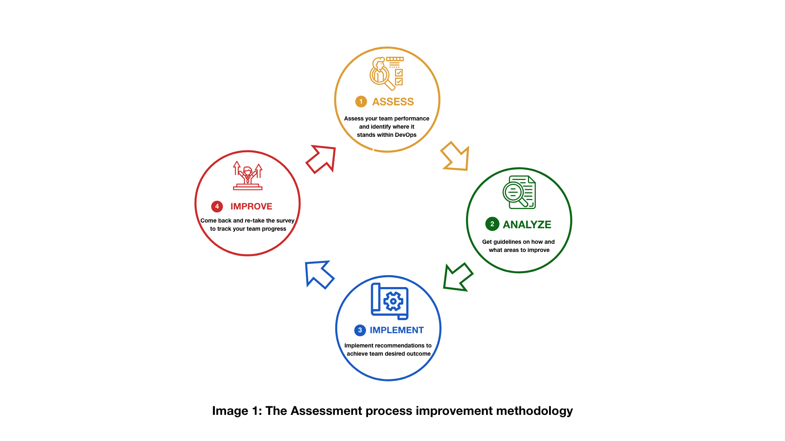

Auto-évaluation DevOps
Le sondage suivant s’appuie sur le Rapport sur l’état du DevOps publié chaque année depuis 2014 par DevOps Research and Assessment (DORA). Le programme de recherche DevOps, qui existe depuis six ans, a permis de valider plusieurs capacités techniques, de processus, de mesure et culturelles afin d’accélérer la livraison de logiciels et le rendement organisationnel. Les questions du sondage serviront à mesurer et à appuyer l’amélioration continue de ces capacités à la DGIIT et à EDSC. Les équipes sont priées de répondre au sondage tous les 6 (six) à 12 (douze) mois pour mesurer la réussite de leurs activités. L’équipe de la stratégie des TI recommande aux équipes de répondre à toutes les capacités pour déterminer la situation initiale et mesurer les progrès accomplis.
Faites l’Auto-évaluation DevOps ou continuez à lire pour plus d’informations.
En quoi consiste l’outil d’auto-évaluation DevOps
L’outil d’auto-évaluation DevOps est un plan d’action qui permet d’examiner soigneusement le potentiel d’auto-amélioration, de mettre au jour les épreuves et possibilités de l’équipe par le truchement des capacités, de discerner les priorités et de suivre l’évolution des progrès. Il est convivial et ses résultats sont crédibles. Il permet d’examiner le rendement de l’équipe et de l’orienter vers l’atteinte du résultat espéré. Il favorise l’accélération du rendement technologique dans l’organisation. Il prend la forme d’un sondage qui permettra de mesurer le rendement de l’équipe, de concevoir ses points forts et de donner des recommandations sur les points à améliorer. Aucune donnée n’est recueillie au cours du processus et la confidentialité des réponses est protégée. L’outil d’auto-évaluation DevOps révélera les domaines dans lesquels les compétences de votre équipe sont en deçà du niveau requis pour atteindre ses objectifs. Les insuffisances qui ne sont pas comblées ont tendance à s’aggraver, ce qui occasionne tôt ou tard l’effondrement des équipes. Les recommandations présentées à chaque section permettront à votre équipe de combler ses insuffisances pour ensuite progresser et atteindre les objectifs requis. Après avoir comparé les compétences définies dans la première évaluation avec les résultats obtenus dans la deuxième, vous verrez dans quelle mesure le rendement de votre équipe a progressé. Il est possible de répéter ce processus jusqu’à l’atteinte des résultats souhaités dans le rendement de l’équipe.
En quoi consistent le problème et la solution
Pour surmonter les épreuves propres au milieu opérationnel actuel, les organisations doivent être à même de livrer des logiciels avec rapidité et stabilité. Cette faculté contribuera à améliorer le rendement de la technologie et des organisations.
À qui s’adresse l’outil
Aux équipes de la DGIIT qui cherchent constamment à s’améliorer et à appuyer les initiatives d’amélioration de leurs homologues.
Quel est l’objectif de l’outil d’auto-évaluation
Après avoir analysé les réponses, les équipes de la TI dans l’organisation peuvent constater si cette dernière avance dans la bonne direction. L’outil d’évaluation DevOps permet de concevoir clairement les points forts et les besoins à combler, d’exposer le niveau actuel de maturité et de définir un plan d’action quant aux améliorations à apporter. Pour obtenir de meilleurs résultats, servez-vous de la trajectoire ci-dessous, propice à l’intégration et à la livraison continues : 
Processus de l’outil d’auto-évaluation DevOps
Voici les étapes de notre processus :
- Donner suite à l’invitation à répondre à un sondage;
- Choisir un thème d’autoévaluation;
- Répondre au sondage sur la section choisie;
- Obtenir une cote (débutant, intermédiaire, avancé);
- Lire les recommandations sur les moyens d’amélioration;
- Mettre en œuvre les recommandations;
- Revenir au sondage et y répondre de nouveau pour constater les progrès réalisés.
![Un graphique avec 11 éléments démontrant le flux du processus d'évaluation.
Il se développe de gauche à droite.
Le premier élément est une icône d'enveloppe avec le texte "Les équipes informatiques reçoivent un lien pour profiter de l'outil d'évaluation" connecté à un enquêteur remplissant une icône d'enquête avec le texte "Prise d'enquête" qui est connecté à côté d'une icône de papier avec des coches représentée comme une enquête avec le texte "Notation basée sur les réponses".
L'icône de l'enquête est reliée à 3 cercles.
Les titres des cercles sont les suivants : en haut "Élevé 90-100%", qui est relié à l'icône d'encouragement avec le texte "Votre équipe se porte bien ! Continuez comme ça !"; au milieu "Moyen 50-89%" qui est relié à l'icône avec une boîte et deux flèches au-dessus avec le texte "Votre équipe peut s'améliorer" ; en bas : "Faible 0-49%" qui est relié à une icône avec deux cases avec un espace entre et une flèche vers le bas au-dessus de l'espace avec le texte "Combler les lacunes de performance de votre équipe avec de nouvelles opportunités d'apprentissage".
Les deux derniers cercles avec le titre "Faible" et "Moyen" avec les icônes suivantes sont connectés à l'icône avec le papier et la loupe dessus.
Cette icône contient le texte "Recommandations sur où et comment améliorer".
À la fin, les trois cercles avec les icônes suivantes sont connectés à une icône de disquette avec le texte "Enregistrer les résultats".](assets/images/assessment_tool_process.png)
Questions
Les questions ont trait à la recherche sur les utilisateurs, au développement, à la mise à l’essai, à l’automatisation, au déploiement, à la gestion et au suivi; toutes ces étapes interviennent dans le cycle de développement des produits. Le sondage comporte 11 sections; pour répondre à chacune d’elles, il faudra environ de 10 à 15 minutes. L’utilisateur peut se soumettre à l’évaluation de la section de son choix et obtenir les résultats sur-le-champ. Prenez note que l’équipe de la stratégie des TI recommande aux équipes de répondre à toutes les sections pour déterminer la situation initiale et mesurer les progrès accomplis.
Types de questions
Êtes-vous d’accord avec… [1-7]
- Tout à fait en désaccord
- .
- .
- Ni d’accord ni en désaccord
- .
- .
- Tout à fait d’accord
Cotation
À partir de chaque section du sondage, vous obtiendrez une cote qui vous permettra de savoir où votre équipe et vous en êtes et où vous pouvez en être dans le parcours DevOps.
Moyenne des questions « Êtes-vous d’accord avec… »
- Basse : 1-3
- Intermédiaire : 4-5
- Élevée : 6-7
Après avoir répondu aux questions, vous aurez accès sur-le-champ aux résultats de l’évaluation dans la page, suivis des recommandations.
Recommandations
Pour atteindre les objectifs d’une coopération et d’une collaboration judicieuses et d’un code sans erreur, des recommandations sont présentées dans chaque section sur les moyens par lesquels améliorer la situation et les mesures à prendre.